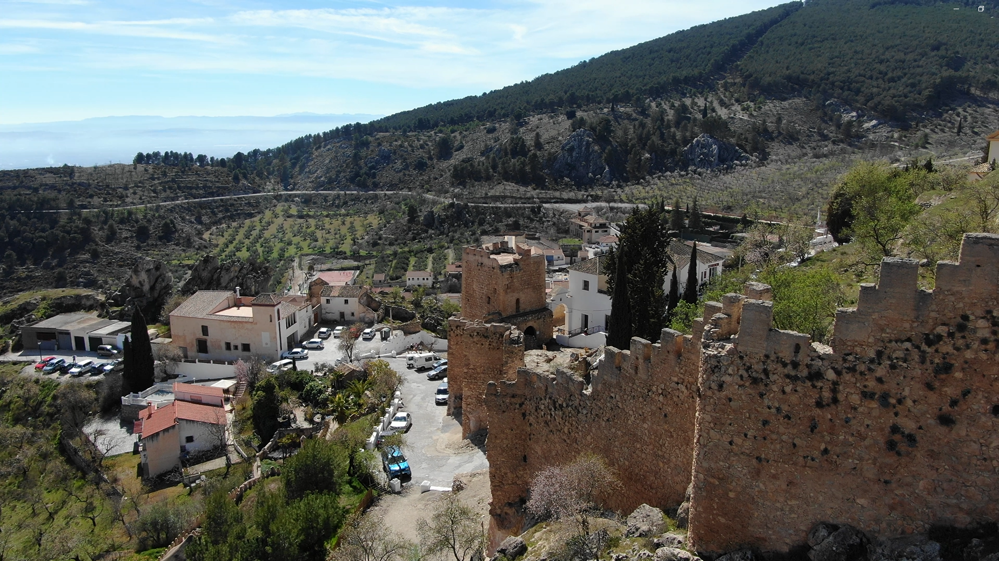
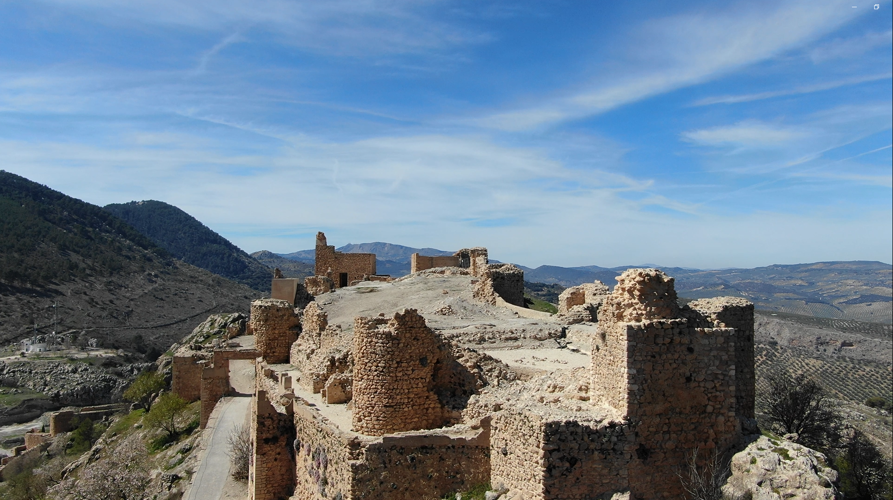
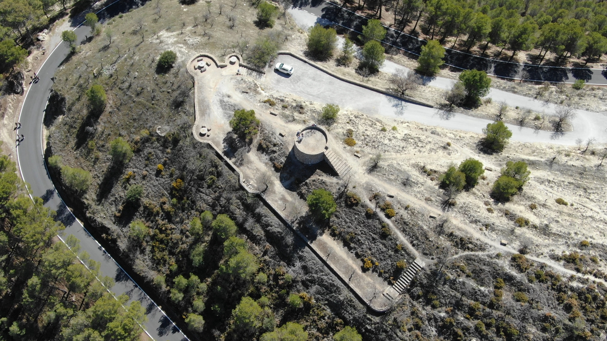

Portal de Incidencias
Ayuntamiento de Moclín
Ayuntamiento
Policía Local
Transporte
Emergencias
Suciedad en las zonas turisticas

Problemas en la via ferrata
Senderos y rutas de senderismo en mal estado

Desprendimientos en la muralla del Castillo

Grafiti en el mirador de la torre